2次元正方格子にランダムに点を置いていく。となりあう点はつながっているとみなす。点が増えていくと、つながった点による大きなクラスタができる。
空間が無限に大きい場合、点がある密度を超えると、クラスタのサイズも無限に大きくなることが知られている。この臨界点において、任意に選んだ格子点が無限に大きなクラスタの一部になっている確率を浸透確率という。これは、最大クラスターに含まれる点の数と、全格子点の数の比である。
ここでは空間が有限の場合のシミュレーションで、浸透確率を調べる。
参考 小田垣孝「つながりの科学」・「パーコレーションの科学」
クラス図・Javadoc
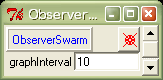
2つのスケジュールを用いる。ひとつは点の追加、 もうひとつはクラスタリングの計算を行う。 クラスタリングの計算は重いことが予想されるため、 graphIntervalの間隔で行う（初期値は10だが、Probeから変更できる）。
グラフの描画のために、浸透確率をObserverSwarmのgetPercolationProbに問い合わせる（PatternSpaceがない場合のため）。このメソッドが改めてPatternSpaceに問い合わせる。クラスタに関する統計についても同様である。
シミュレーションが終了したかどうかは、checkToStopがModelSwarmに問い合わせることで調べる。
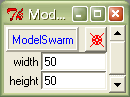
空間の幅と高さはファイルpercolation.scmで定義しているが、シミュレーションが始まる前ならば、Probeからも変更できる。
シミュレーションの終了は、checkToStopがPatternSpaceに格子が残っているかどうかを問い合わせる()ことで調べる。
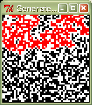
メソッドupdateによって、空いている格子点にランダムに点が置かれる。
最大クラスタ・サイズの問い合わせgetLargestClusterSizeは、内部でtraceを呼んでクラスタリングを行う。traceの主要部はtraceClusterで、同じクラスタに属する点をすべて拾い出す。
最大クラスタに属する点を赤で表示する（同じ大きさのクラスタが複数ある場合は、はじめに見つけたものを表示）。
点の数pointsに対して浸透確率P(points)をプロットする。計算が重いため、確率値の更新はgraphIntervalごとである。
クラスタ・サイズのヒストグラムの作成にEZBinを用いている。クラスタが確定しないと作れないため、更新はEZGraphと同様graphIntervalごとである。
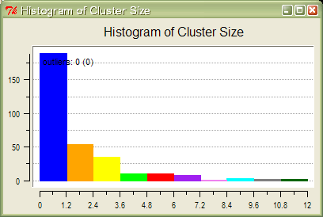
PatternSpaceを見ると、はじめのうちは小さい最大クラスタ（赤い部分）が、突然大きくなる時点があることが観察できる。
浸透確率は下図のように変化する。浸透閾値（2次元正方格子の場合0.5927）までは非常に小さく（無限に広い場合は0）、それを越えると突然大きくなることがわかる。ここではクラスタ数の変遷も視覚化している（格子数の15%で割った値）。浸透確率が0より大きくなると急激に減少することがわかる。
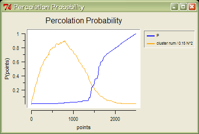
ちなみに、無限に広い場合には、浸透閾値において無限に大きいクラスタができるが、それにもかかわらず浸透確率が0なのは、空間のサイズが一辺の長さをnとして、n^2で増加するのに対し、最大クラスタのサイズはn^1.89程度でしか増加しないためである（つまり、このクラスタは1.89次元のフラクタル構造をなしている）。
注意：このシミュレーションは、Swarmの使い方の例として作ったものであって、Swarmの利点を生かしたものではない。また、Swarmを用いて2次元正方格子上でのサイト過程のパーコレーションを簡単に視覚化できるのは、2次元正方格子のための表示ライブラリがすでに用意されているからである。他の格子や3次元の視覚化のためには、何らかの工夫が必要だろう（下図を参照）。
| 50x50 | 100x100 | 200x200 |
| 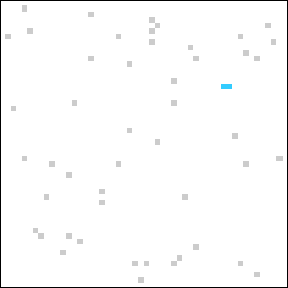 | 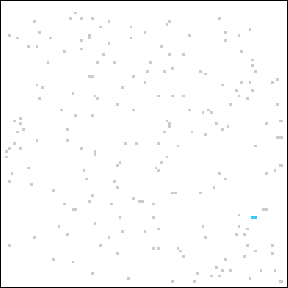 | 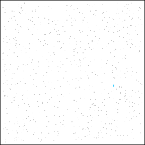 |
| 10x10x10 | 20x20x20 | 30x30x30 |
| 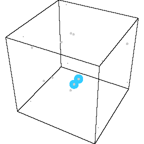 | 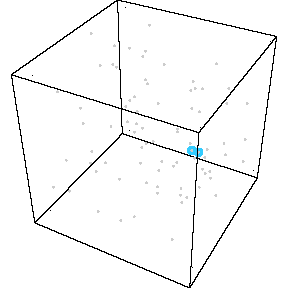 | 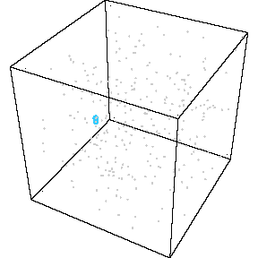 |